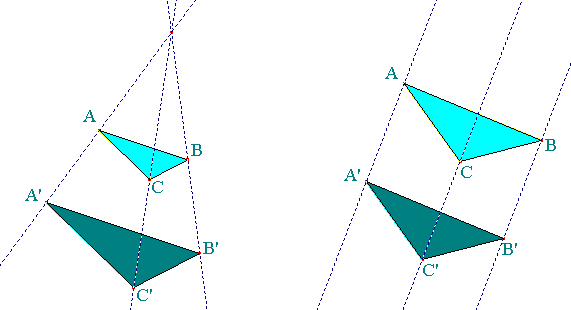

| Choisissez votre langue ! | Choose your language ! |
Girard Desargues
Girard Desargues, alias S.G.D.L. (le Sieur Girard Desargues Lyonnois comme il signe lui-même ses écrits) est un géomètre et architecte français né à Lyon le 21 février 1591 et décédé à Lyon en octobre 1661, considéré comme fondateur de la géométrie projective : il a donné son nom à la configuration de Desargues et au théorème de Desargues.Girard Desargues
Girard Desargues, alias S.G.D.L. (the Sieur Girard Desargues Lyonnois as he himself signs his writings) is a French surveyor and architect born in Lyon on February 21, 1591 and died in Lyon in October 1661, considered as the founder of projective geometry: he gave his name to the configuration of Desargues and the theorem of Desargues.
Dilatations
Dans tout ce paragraphe A désigne un espace affine associé à un espace vectoriel E.Dilations
Throughout this paragraph A denotes an affine space associated with a vector space E.démonstration
Considérons en effet l'application linéaire u associée à f.Si \( \displaystyle \overrightarrow{x} \) et \( \displaystyle \overrightarrow{y} \) sont des vecteurs indépendants de E. On a :
\( \displaystyle u\left ( \overrightarrow{x} \right )=\lambda \overrightarrow{x} \)
\( \displaystyle u\left ( \overrightarrow{y} \right )=\mu \overrightarrow{x} \)
\( \displaystyle u\left ( \overrightarrow{x}+\overrightarrow{y} \right )=\nu \left ( \overrightarrow{x}+\overrightarrow{y} \right ) \)
Donc\( \displaystyle \nu \left ( \overrightarrow{x}+\overrightarrow{y} \right )=\lambda \overrightarrow{x}+\mu \overrightarrow{y} \)
D'où λ=μ=ν.proof
Consider indeed the linear map u associated with f.If \( \displaystyle \overrightarrow{x} \) and \( \displaystyle \overrightarrow{y} \) are vectors independent of E. We have:
\( \displaystyle u\left ( \overrightarrow{x} \right )=\lambda \overrightarrow{x} \)
\( \displaystyle u\left ( \overrightarrow{y} \right )=\mu \overrightarrow{x} \)
\( \displaystyle u\left ( \overrightarrow{x}+\overrightarrow{y} \right )=\nu \left ( \overrightarrow{x}+\overrightarrow{y} \right ) \)
SO\( \displaystyle \nu \left ( \overrightarrow{x}+\overrightarrow{y} \right )=\lambda \overrightarrow{x}+\mu \overrightarrow{y} \)
Hence λ=μ=ν.Soient dans A deux droites parallèles D et D'.
Soient M et N deux points distincts de D.
Soient M' et N' deux points distincts de D'.
Dans ces conditions il existe une et une seule dilatation f vérifiant f(M)=M' et f(N)=N'.
Let A be two parallel lines D and D'.
Let M and N be two distinct points of D.
Let M' and N' be two distinct points of D'.
Under these conditions there exists one and only one dilation f satisfying f(M)=M' and f(N)=N'.
démonstration
Soit k tel que \( \displaystyle \overrightarrow{M'N'}=k\overrightarrow{MN} \) .(MM') et (NN') sont deux droites du plan P donc soient elles se coupent, soient elles sont parallèles.
Si elles sont parallèles k=1 et f est une translation.
Si elles se coupent en S, f est l'homothétie de centre S et de rapport k.
proof
Let k such that \( \displaystyle \overrightarrow{M'N'}=k\overrightarrow{MN} \) .(MM') and (NN') are two straight lines in the plane P so either they intersect or they are parallel.
If they are parallel k=1 and f is a translation.
If they intersect at S, f is the dilation with center S and ratio k.
Le théorème de Desargues (forme faible)
On considère deux triangles ABC et A'B'C' dans le plan ou dans l'espace.Desargues' theorem (weak form)
We consider two triangles ABC and A'B'C' in the plane or in space.On suppose que A,B,C ne sont pas alignés et qu'il en est de même de A'B'C'.
On suppose que dans les triangles ABC et A'B'C' les côtés correspondants sont deux à deux parallèles.
Dans ces conditions :
Soit les trois droites (AA'),(BB'),(CC') sont parallèles
Soit elles se coupent en un seul point (elles sont concourantes).
Assume that A,B,C are not aligned and so is A'B'C'.
Assume that in triangles ABC and A'B'C' the corresponding sides are parallel two by two.
Under these conditions:
Either the three lines (AA'), (BB'), (CC') are parallel
Either they intersect at a single point (they are concurrent).

démonstration
En vertu de ce qui précède, il existe une et une seule dilatation f dans le plan ABA'B' qui transforme A en A' et B en B'. Nous étendons cette dilatation à l'espace entier.D'après ce qui précède (AC)//(A'f(C)) et (BC) // (B'f(C)).
Donc (A'C')=(A'f(C)) et (B'C')=(B'f(C)).
Donc, dans le plan A'B'C' {C'}=(A'f(C))∩(B'f(C))={f(C)} d'où C'=f(C).
Mais alors nous avons deux éventualités :
Soit (AA')∩(BB')=∅ f est alors une translation et (AA')//(BB')//(CC').
Soit (AA')∩(BB')={S} et f est une homothétie de centre S.
Les trois droites (AA'), (BB'), (CC') concourent alors en S.
proof
By virtue of the above, there is one and only one dilation f in the plane ABA'B' which transforms A into A' and B into B'. We extend this dilation to the entire space.From the above (AC)//(A'f(C)) and (BC) // (B'f(C)).
So (A'C')=(A'f(C)) and (B'C')=(B'f(C)).
So, in the plane A'B'C' {C'}=(A'f(C))∩(B'f(C))={f(C)} hence C'=f(C ).
But then we have two possibilities:
Let (AA')∩(BB')=∅ f is then a translation and (AA')//(BB')//(CC').
Let (AA')∩(BB')={S} and f is a dilation with center S.
The three straight lines (AA'), (BB'), (CC') then converge in S.
Le théorème de Desargues (forme forte)
Le théorème de Desargues fort peut s'énoncer ainsi :Desargues' theorem (strong form)
The strong Desargues theorem can be stated as follows:les côtés (AB) et (A'B') se coupent en un point K.
Les côtés (AC) et (A'C') se coupent en un point J.
Les côtés (BC) et (B'C') se coupent en un point I.
Les points I,J,K sont alignés.
sides (AB) and (A'B') intersect at point K.
The sides (AC) and (A'C') intersect at a point J.
The sides (BC) and (B'C') intersect at a point I.
Points I,J,K are aligned.
démonstration
La démonstration (bulletin APMEP 493) se fait en 4 étapes:- Soit O un point fixé du plan. Montrer que les affirmations suivantes sont équivalentes :
- les points P, Q et R sont alignés.
- il existe trois réels p, q et r non tous nuls tels que :
\( \displaystyle \left\{\begin{matrix} p+q+r=0\\ p\overrightarrow{OP}+q\overrightarrow{OQ}+r\overrightarrow{OR}=\overrightarrow{0} \end{matrix}\right. \)
- Justifier l’existence de trois réels α, β, et γ tels que :
\( \displaystyle \alpha \overrightarrow{OA}+(1-\alpha )\overrightarrow{OA'}=\beta \overrightarrow{OB}+(1-\beta )\overrightarrow{OB'}=\gamma \overrightarrow{OC}+(1-\gamma )\overrightarrow{OC'}=\overrightarrow{0} \)
et montrer que les nombres α, β et γ sont deux à deux distincts. - Établir :
- que I est le barycentre de (B, β) et (C, -γ),
- que K est le barycentre de (A, α) et (B, -β).
- que J est le barycentre de (C, γ) et (A, -α),
- En déduire que I, J et K sont alignés.
proof
The demonstration (bulletin APMEP 493) is done in 4 steps:- Let O be a fixed point of the plane. Show that the following statements are equivalent:
- points P, Q and R are aligned.
- there are three non-zero reals p, q and r such that:
\( \displaystyle \left\{\begin{matrix} p+q+r=0\\ p\overrightarrow{OP}+q\overrightarrow{OQ}+r\overrightarrow{OR}=\overrightarrow{0} \end{matrix}\right. \)
- Justify the existence of three reals α, β, and γ such as :
\( \displaystyle \alpha \overrightarrow{OA}+(1-\alpha )\overrightarrow{OA'}=\beta \overrightarrow{OB}+(1-\beta )\overrightarrow{OB'}=\gamma \overrightarrow{OC }+(1-\gamma )\overrightarrow{OC'}=\overrightarrow{0} \)
and show that the numbers α, β and γ are pairwise distinct. - Establish :
- that I is the barycenter of (B, β) and (C, -γ),
- that K is the barycenter of (A, α) and (B, -β).
- that J is the barycenter of (C, γ) and (A, -α),
- Deduce that I, J and K are aligned.
Desargues interactif
Voici une appliquette vous permettant de visualiser le théorème de Desargues (forme faible) dans le plan affine.Les points rouge sont déplaçables avec la souris.
Le curseur vous permet de fixer le rapport de la dilatation (observer le cas k=1).
Interactive Desargues
Here is an applet allowing you to visualize Desargues' theorem (weak form) in the affine plane.The red dots can be moved with the mouse.
The slider allows you to set the ratio of the dilation (observe the case k=1).
Les points rouges A,B,C,A',B',C' sont déplaçables avec la souris.
The red dots A,B,C,A',B',C' can be moved with the mouse.
|
Création Gilles Dubois
Created by Gilles Dubois
|
Janvier 2022
January 2022
|
Version mobile Jquery
Mobile Jquery version
|
|